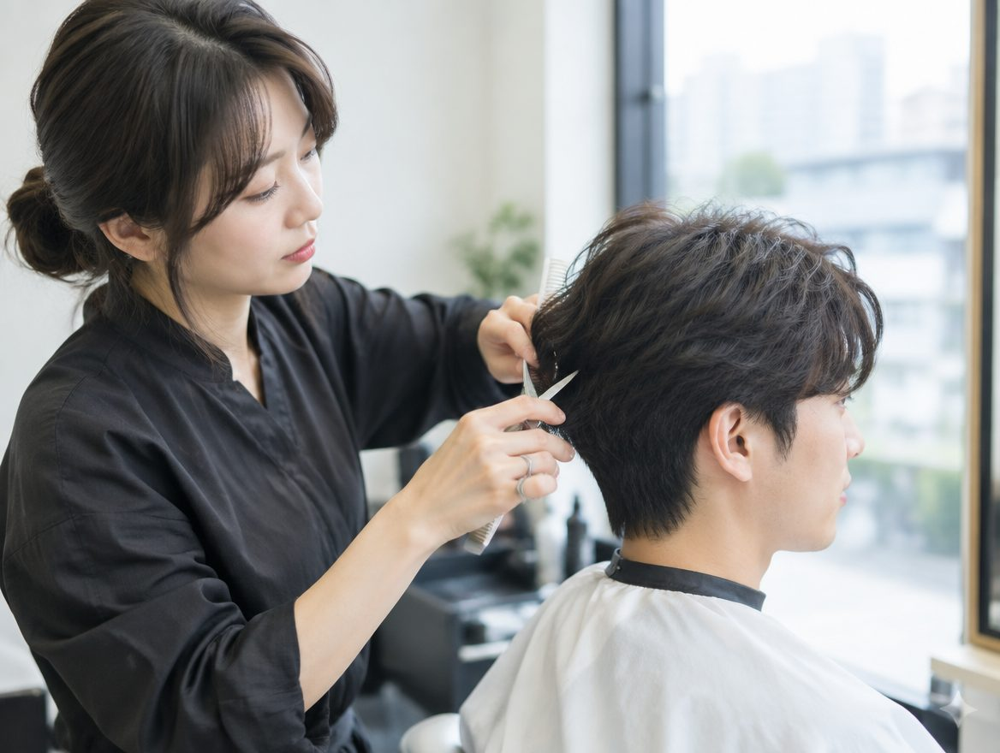
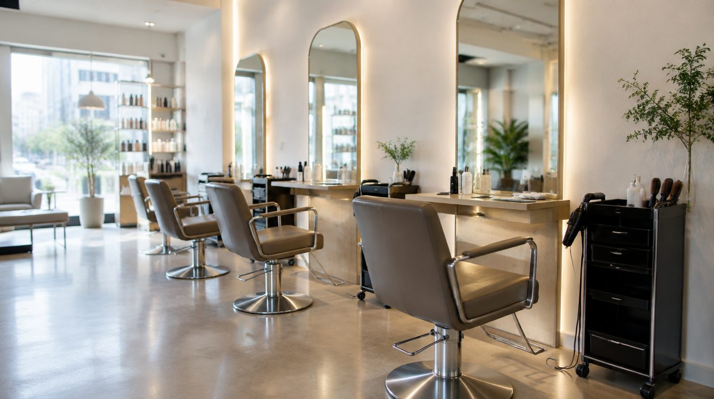
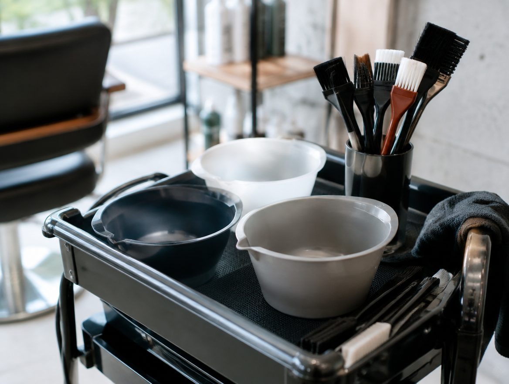
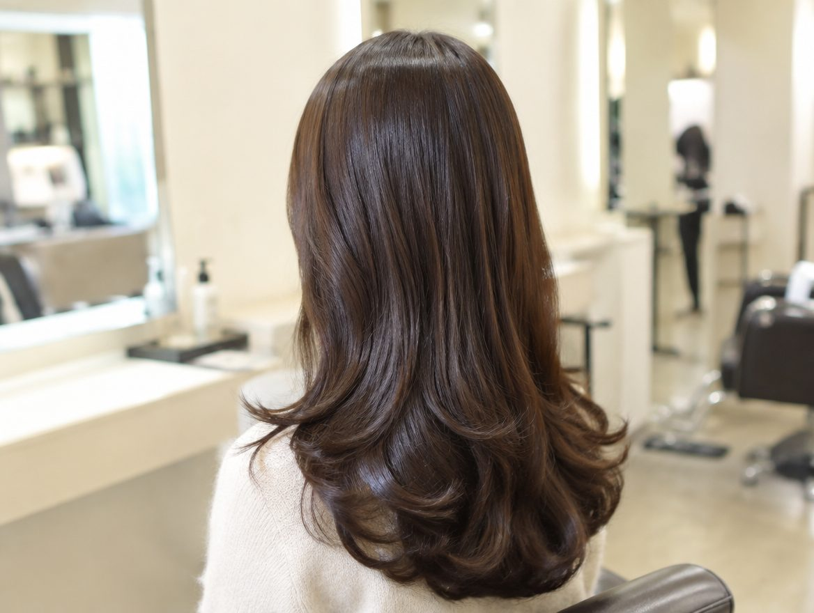

soft & natural
부드러운 선과 편안한 인상을 이야기하는 상담 방향
유행하는 스타일보다, 나의 일상에 어울리는 인상



좋아하는 인상과 평소 손질 습관을 함께 살펴보세요
부드러운 선과 편안한 인상을 이야기하는 상담 방향
또렷한 윤곽과 정돈된 느낌을 이야기하는 상담 방향

일상에서 손질하는 시간까지 함께 생각하는 방향
모발 상태와 가능 여부는 전문가 상담에서 확인합니다 여기서는 원하는 분위기와 손질 습관만 가볍게 정리합니다